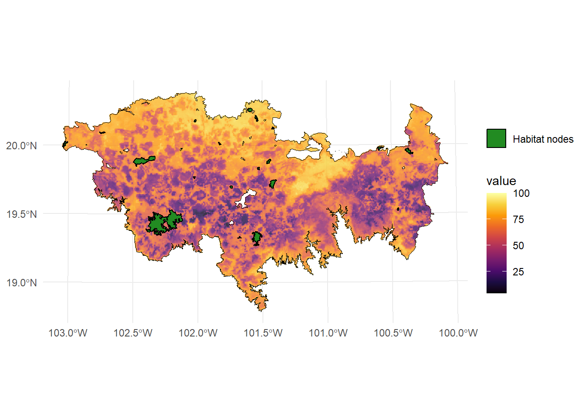
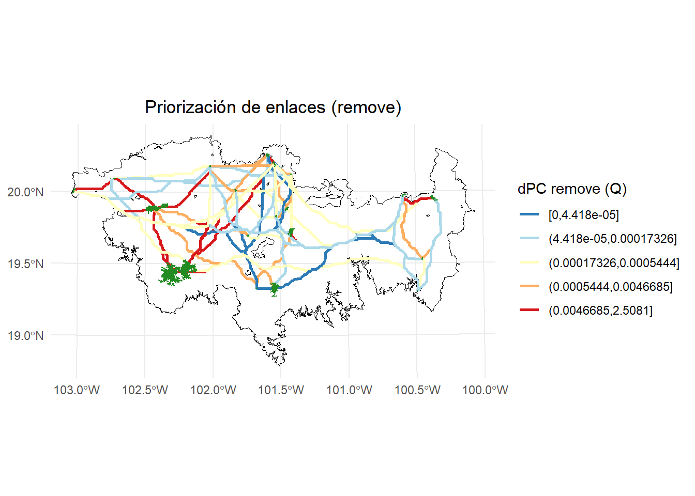
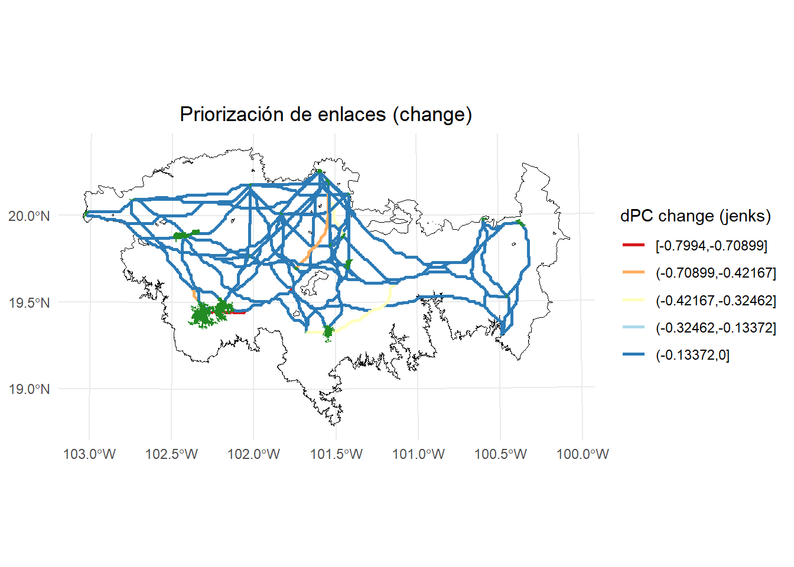
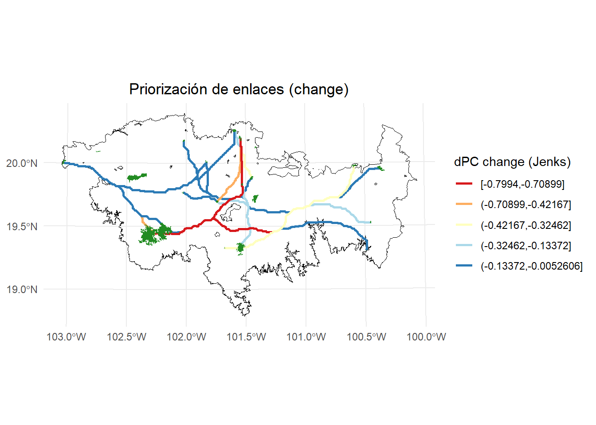

8 Prioridad de enlaces con MK_dPCIIC_links()
Esta función calcula el índice dPC o dIIC para estimar la importancia de los enlaces para la conservación y la restauración. Calcula la contribución de cada enlace individual para mantener (modo: eliminación de enlaces) o mejorar (modo: cambio de enlaces) la conectividad general bajo uno o varios umbrales de distancia.
Estos son los argumentos:
| Argumento | Descripción en español |
|---|---|
nodes |
Objeto que contiene la información de los nodos (por ejemplo, fragmentos o parches de hábitat). Puede ser: - data.frame con al menos dos columnas: la primera para los ID de los nodos y la segunda para los atributos. - Datos espaciales vectoriales ( sf, SpatVector, SpatialPolygonsDataFrame) en un sistema de coordenadas proyectado. - Ráster ( RasterLayer, SpatRaster) con valores enteros representando el ID de cada nodo y áreas no hábitat como NA. |
attribute |
Caracter o vector. Si es NULL (solo válido cuando nodes es espacial vectorial o ráster), se usará el área del nodo como atributo. Para usar otro atributo: - Si nodes es vector espacial o data.frame, indicar el nombre de la columna. - Si nodes es ráster, debe ser un vector numérico con el atributo por nodo. Si weighted = TRUE, se multiplica por el área de cada nodo para obtener un índice ponderado. |
LA |
Numérico. (opcional, por defecto = NULL). Valor máximo del atributo del paisaje. No afecta la importancia relativa de los nodos, solo se usa para calcular la conectividad total del paisaje. Si se omite y overall = TRUE, solo se calcula el numerador del índice global. |
area_unit |
Caracter. Unidad del área cuando attribute = NULL. Opciones: "m2" (por defecto), "km2", "cm2" o "ha". |
distance |
Matriz o lista que establece las distancias entre pares de nodos. Puede ser: - Matriz cuadrada con distancias (euclidianas o efectivas). - Lista de parámetros (por ejemplo: type = "least-cost", resistance = raster_resistance). Tipos posibles: "centroid", "edge", "least-cost", "commute-time". |
metric |
Caracter indicando el índice de conectividad a usar: "PC" (por defecto y recomendado) o "IIC". |
probability |
Valor numérico de la probabilidad asociada al umbral de distancia (distance_thresholds). Por ejemplo, si es distancia mediana de dispersión usar 0.5. Para distancias máximas, usar 0.05 o 0.01. Solo se usa si metric = "PC". Si es NULL, se usa 0.5. |
distance_thresholds |
Valor numérico (o vector) que indica la(s) distancia(s) de dispersión en metros. Si es NULL, se estima como la mediana de las distancias entre nodos. Alternativamente, puede usarse la función dispersal_distance. |
threshold |
Numérico. Se excluyen los pares de nodos con una distancia mayor al umbral, acelerando el procesamiento. |
removal |
Lógico. Si es TRUE (por defecto), se calcula la importancia de los enlaces usando el modo de eliminación de enlaces. |
change |
(opcional, por defecto NULL). Numérico que indica las nuevas distancias para calcular la importancia de los enlaces bajo el modo de cambio de enlace. |
overall |
Lógico. Si es TRUE, se añade el índice EC global al resultado, el cual se convierte en una lista. Por defecto es FALSE. |
parallel |
(opcional, por defecto = NULL). Numérico que indica el número de núcleos para paralelizar el cálculo de los índices. Recomendado si se tienen más de 1000 nodos. |
parallel_mode |
(opcional, por defecto = 1). Numérico que indica el modo de paralelización: - Modo 1 (por defecto): paraleliza el cálculo de deltas de conectividad. - Modo 2: paraleliza el cálculo de rutas de menor costo. Recomendado para >1000 nodos. |
write |
Caracter que indica la ruta y prefijo para guardar los resultados, por ejemplo "C:/ejemplo". Por defecto no se guarda nada. Los archivos generados incluyen: - Importancia de cada enlace (formato CSV). - Tabla de conectividad global del paisaje si overall = TRUE (formato CSV). |
intern |
Lógico. Si es TRUE (por defecto), muestra el progreso del proceso. Puede que no llegue a 100% si las operaciones son muy rápidas. |
8.1 Rutas de menor costo (corredores potenciales)
Para realizar un ejemplo, estimaremos los corredores potenciales entre 20 de nuestros parches utilizando el raster de resistencia que usamos en ejemplos previos.
set.seed(2) #para seleccionar siempre los mismos de forma aleatoria
parches_ejemplo <- habitat_nodes[sample(1:nrow(habitat_nodes), 20),]
parches_ejemplo$Id <- 1:20 #Asignamos un nuevo id
library(terra)
data("resistance_matrix", package = "Makurhini")
raster_map <- as(resistance_matrix, "SpatialPixelsDataFrame")
raster_map <- as.data.frame(raster_map)
colnames(raster_map) <- c("value", "x", "y")
ggplot() +
geom_tile(data = raster_map, aes(x = x, y = y, fill = value), alpha = 0.8) +
geom_sf(data = paisaje, aes(color = "Study area"), fill = NA, color = "black") +
geom_sf(data = parches_ejemplo, aes(color = "Habitat nodes"), fill = "forestgreen", linewidth = 0.5) +
scale_fill_gradientn(colors = c("#000004FF", "#1B0C42FF", "#4B0C6BFF", "#781C6DFF",
"#A52C60FF", "#CF4446FF", "#ED6925FF", "#FB9A06FF",
"#F7D03CFF", "#FCFFA4FF"))+
scale_color_manual(name = "", values = "black")+
theme_minimal() +
theme(axis.title.x = element_blank(),
axis.title.y = element_blank())
Estamos utilizando un raster de resistencia que esta incluido en el paquete Makurhini. Para cargar un raster de resistencia para tu estudio puedes utilizar la función raster() del paquete raster o la función rast() del paquete terra.
8.2 Eliminación de enlaces (Link removal)
Si removal = TRUE, la función elimina uno por uno cada uno de los enlaces existentes en la red del paisaje y calcula el impacto de esa pérdida de enlace en la conectividad del paisaje con las métricas dPC o dIIC. Este modo es útil para identificar los enlaces prioritarios que se deben conservar: aquellos con la mayor contribución a la conectividad general del paisaje (valor dPC o dIIC más alto).
En este ejemplo, estimaremos algunas rutas de menor costo entre pares de parches, estas rutas representan corredores potenciales.
library(purrr)
library(gdistance)
#A los valores NA les asignamos un alto valor para evitar que pasen por ahí
resistance_matrix[is.na(resistance_matrix)] <- 1000
#Estimamos la matriz de transición
tr <- transition(resistance_matrix, function(x) 1/mean(x), 8)
#Hacemos una corrección para los movimientos en diagonal
tr <- geoCorrection(tr, type = "c")
#Estimamos el centroide de nuestros parches
centroides <- st_centroid(parches_ejemplo, of_largest_polygon = TRUE)
centroides <- st_coordinates(centroides)
#Loop para estimar corredores entre parches
rutas_list <- list()
counter <- 1
for (i in 1:(nrow(centroides) - 1)) {
#cat(paste0(i, " de ", nrow(centroides), "\r"))
counter <- 1
rutas <- map_dfr((i + 1):nrow(centroides), function(j){
if(counter <= nrow(centroides)){
ruta <- shortestPath(tr, centroides[i,], centroides[j,], output = "SpatialLines")
ruta <- st_as_sf(ruta); st_crs(ruta) <- st_crs(habitat_nodes)
ruta$from <-i ; ruta$to <- j
return(ruta)
}
})
rutas_list[[i]] <- rutas
}
rutas_mc <- do.call(rbind, rutas_list)
ggplot() +
geom_sf(data = paisaje, fill = NA, color = "black") +
geom_sf(data = rutas_mc, aes(color = "corredores"), color = "black", linewidth = 0.5) +
geom_sf(data = parches_ejemplo, aes(color = "Habitat nodes"),
fill = "forestgreen", color = NA, linewidth = 0.5) +
theme_minimal() +
labs(
title = "Corredores potenciales"
) +
theme(
plot.title = element_text(hjust = 0.5)
)
Ahora aplicamos la función MK_dPCIIC_links(), pero antes exploremos una nueva variante de estimar el umbral de distancia cuando usamos una resistencia.
Estimaremos la distancia efectiva promedio: media de la resistencia x dispersión De esta forma obtenemos una distancia costo.
#Distancia efectiva promedio como umbral de distancia
Effec_mean <- mean(resistance_matrix[], na.rm = TRUE) * 10000 # 10km
#Aplicamos la función
delta <- MK_dPCIIC_links(nodes = parches_ejemplo,
attribute = NULL,
area_unit = "ha",
distance = list(type = "least-cost",
resistance = resistance_matrix),
removal = TRUE,
metric = "PC",
probability = 0.5,
distance_thresholds = round(Effec_mean),
parallel = NULL,
parallel_mode = 0,
intern = TRUE)
#> Estimating distances. This may take several minutes depending on the number of nodes and raster resolution
#> Estimating PC link index. This may take several minutes depending on the number of nodes
#>
#> Done!
head(delta)
#> Id Source Destination dPC_removal
#> 1 1 2 1 0.0004151
#> 2 2 3 1 0.0001186
#> 3 3 4 1 0.0001053
#> 4 4 5 1 0.0502042
#> 5 5 6 1 0.0000061
#> 6 6 7 1 0.0000350Unir valores con mis corredores de interes:
#Existen otras formas, pero crearé un nuevo ID
delta$ID_nuevo <- paste0(delta$Destination, "_", delta$Source)
#Guardo las rutas en un objeto nuevo para tener de respaldo mi vector original
rutas_mc2 <- rutas_mc
rutas_mc2$ID_nuevo <- paste0(rutas_mc2$from, "_", rutas_mc$to)
#Aplicar merge
rutas_mc2 <- merge(rutas_mc2, delta, by = "ID_nuevo")
rutas_mc2
#> Simple feature collection with 190 features and 7 fields
#> Geometry type: LINESTRING
#> Dimension: XY
#> Bounding box: xmin: -107336.4 ymin: 2082987 xmax: 176163.6 ymax: 2187987
#> Projected CRS: NAD_1927_Albers
#> First 10 features:
#> ID_nuevo from to Id Source Destination dPC_removal
#> 1 1_10 1 10 9 10 1 0.0000827
#> 2 1_11 1 11 10 11 1 0.0019437
#> 3 1_12 1 12 11 12 1 0.0273787
#> 4 1_13 1 13 12 13 1 0.0000367
#> 5 1_14 1 14 13 14 1 0.0003651
#> 6 1_15 1 15 14 15 1 0.0061334
#> 7 1_16 1 16 15 16 1 0.0000411
#> 8 1_17 1 17 16 17 1 0.0000410
#> 9 1_18 1 18 17 18 1 0.0000514
#> 10 1_19 1 19 18 19 1 0.0002504
#> geom
#> 1 LINESTRING (-77336.39 21694...
#> 2 LINESTRING (-77336.39 21694...
#> 3 LINESTRING (-77336.39 21694...
#> 4 LINESTRING (-77336.39 21694...
#> 5 LINESTRING (-77336.39 21694...
#> 6 LINESTRING (-77336.39 21694...
#> 7 LINESTRING (-77336.39 21694...
#> 8 LINESTRING (-77336.39 21694...
#> 9 LINESTRING (-77336.39 21694...
#> 10 LINESTRING (-77336.39 21694...Ejemplo de visualización:
library(ggplot2)
library(classInt)
library(dplyr)
# Calcular los intervalos de Jenks para strength
breaks <- classInt::classIntervals(rutas_mc2$dPC_removal, n = 5, style = "quantile")
# Crear una nueva variable categórica con los intervalos
rutas_mc2 <- rutas_mc2 %>%
mutate(dPC_q = cut(dPC_removal,
breaks = breaks$brks,
include.lowest = TRUE,
dig.lab = 5))
# Graficar usando ggplot2 y colores de ColorBrewer
ggplot() +
geom_sf(data = paisaje, fill = NA, color = "black") +
geom_sf(data = rutas_mc2, aes(color = dPC_q), size = 0.5, linewidth = 1) +
scale_color_brewer(palette = "RdYlBu", direction = -1, name = "dPC remove (Q)") +
geom_sf(data = parches_ejemplo, aes(color = "Habitat nodes"),
fill = "forestgreen", color = NA, linewidth = 0.5) +
theme_minimal() +
labs(
title = "Priorización de enlaces (remove)",
fill = "dPC"
) +
theme(
legend.position = "right",
plot.title = element_text(hjust = 0.5)
)
8.3 Cambio de enlaces (Link change)
Si change != NULL, la función sustituye uno por uno cada uno de los enlaces existentes en la red del paisaje y calcula el impacto de ese cambio de enlace en la conectividad del paisaje con las métricas dPC o dIIC. Este modo es útil para identificar los enlaces prioritarios tanto para conservar como para restaurar. Los valores positivos de dPC o dIIC corresponden a pérdidas o degradación de enlaces, y los enlaces prioritarios para conservar corresponden a aquellos con los valores positivos más altos. Los valores negativos de dPC o dIIC corresponden a mejoras en los enlaces, y los enlaces prioritarios para restaurar son aquellos con los valores negativos más pequeños.
Este modo requiere información adicional, una matriz de distancias con los nuevos valores de distancia entre todos los pares de nodos. Estos nuevos valores de distancia serán, en general, diferentes a los del parámetro de distancia. Una distancia menor corresponde a un aumento en la calidad o la fuerza del enlace entre dos parches en un escenario de cambio o restauración determinado. Una distancia mayor significa que la conexión entre esos dos parches se debilita, lo que corresponde a un escenario de degradación. Son posibles todo tipo de combinaciones y diferentes tipos de cambios para cada uno de los enlaces. Por ejemplo, algunas conexiones pueden mejorar, otras pueden disminuir su calidad o incluso desaparecer por completo (es decir, nueva distancia = NA), y otros enlaces pueden no sufrir ningún cambio en el mismo análisis, dependiendo de los nuevos valores de distancia particulares para cada enlace.
Para este ejemplo primero estimaremos las distancias de menor costo entre los parches.
distancias <- distancefile(parches_ejemplo,
id = "Id",
type = "least-cost",
resistance = resistance_matrix,
pairwise = FALSE)Enseguida imaginaremos el siguiente escenario donde despues de restaurar disminuyo un 40% la resistencia y aumento la permiabilidad en 30 enlaces que tomaremos de forma aleatoria.
#No de enlaces
n <- 30
# Numero total de elementos
total_elements <- length(distancias)
# seleccion aleatoria
set.seed(4)
rand_idx <- sample(1:total_elements, n)
# obtener posiciones en la matriz de distancias
rand_positions <- arrayInd(rand_idx, .dim = dim(distancias))
# A esos enlaces les reduciremos un 40% de su valor
distancias_restauracion <- distancias
reduccion <- (40*distancias_restauracion[rand_positions])/100
distancias_restauracion[rand_positions] <- distancias_restauracion[rand_positions] - reduccionValor de distancia costo inicial:
distancias[rand_positions]
#> [1] 10529640 2318903 9008346 6086036 7415533 6186777
#> [7] 3782229 3633854 3943299 1997412 4520460 3027740
#> [13] 1171964 5673392 9838126 6790792 7521077 5639993
#> [19] 7644104 10060651 2760338 6173235 5595429 2857423
#> [25] 13339827 6044401 4218765 6716738 9700048 5077371Valor de distancia costo después de reducir el valor de resistencia:
distancias_restauracion[rand_positions]
#> [1] 6317784.0 1391341.7 5405007.7 3651621.6 4449319.8
#> [6] 3712066.3 2269337.4 2180312.6 2365979.3 1198447.2
#> [11] 2712276.3 1816644.0 703178.2 3404035.3 5902875.6
#> [16] 4074475.0 4512646.4 3383995.9 4586462.4 6036390.6
#> [21] 1656202.7 3703941.1 3357257.1 1714454.1 8003896.5
#> [26] 3626640.4 2531258.9 4030042.6 5820028.6 3046422.5Aplicamos la función:
#Distancia efectiva promedio como umbral de distancia
Effec_mean <- mean(resistance_matrix[], na.rm = TRUE) * 10000 # 10km
#[1] 5229259
#Aplicamos la función
delta <- MK_dPCIIC_links(nodes = parches_ejemplo,
attribute = NULL,
area_unit = "ha",
distance = distancias,
removal = TRUE,
change = distancias_restauracion,
metric = "PC",
probability = 0.5,
distance_thresholds = round(Effec_mean),
parallel = NULL,
parallel_mode = 0,
intern = TRUE)
#> Estimating PC link index. This may take several minutes depending on the number of nodes
#>
#> Done!
names(delta)
#> [1] "Link_removal_importances_d5229259"
#> [2] "Link_change_importances_d5229259"Vemos el resultado. Es importante recordar que los nombres de los elementos de las listas cambian dependiendo del umbral de distancia que uses (e.g., _d5229259, _d10000, _d200)
head(delta$Link_change_importances_d5229259)
#> Id Source Destination dPC_change
#> 1 1 2 1 0
#> 2 2 3 1 0
#> 3 3 4 1 0
#> 4 4 5 1 0
#> 5 5 6 1 0
#> 6 6 7 1 0Lo unimos a nuestro vector con los corredores:
change_corr <- delta$Link_change_importances_d5229259
change_corr$ID_nuevo <- paste0(change_corr$Destination, "_", change_corr$Source)
#Por precaución guardamos los corredores en otro objeto y generamos el ID
rutas_mc3 <- rutas_mc
rutas_mc3$ID_nuevo <- paste0(rutas_mc3$from, "_", rutas_mc3$to)
#Unimos
rutas_mc3 <- merge(rutas_mc3, change_corr, by = "ID_nuevo")
rutas_mc3
#> Simple feature collection with 190 features and 7 fields
#> Geometry type: LINESTRING
#> Dimension: XY
#> Bounding box: xmin: -107336.4 ymin: 2082987 xmax: 176163.6 ymax: 2187987
#> Projected CRS: NAD_1927_Albers
#> First 10 features:
#> ID_nuevo from to Id Source Destination dPC_change
#> 1 1_10 1 10 9 10 1 0
#> 2 1_11 1 11 10 11 1 0
#> 3 1_12 1 12 11 12 1 0
#> 4 1_13 1 13 12 13 1 0
#> 5 1_14 1 14 13 14 1 0
#> 6 1_15 1 15 14 15 1 0
#> 7 1_16 1 16 15 16 1 0
#> 8 1_17 1 17 16 17 1 0
#> 9 1_18 1 18 17 18 1 0
#> 10 1_19 1 19 18 19 1 0
#> geom
#> 1 LINESTRING (-77336.39 21694...
#> 2 LINESTRING (-77336.39 21694...
#> 3 LINESTRING (-77336.39 21694...
#> 4 LINESTRING (-77336.39 21694...
#> 5 LINESTRING (-77336.39 21694...
#> 6 LINESTRING (-77336.39 21694...
#> 7 LINESTRING (-77336.39 21694...
#> 8 LINESTRING (-77336.39 21694...
#> 9 LINESTRING (-77336.39 21694...
#> 10 LINESTRING (-77336.39 21694...Podemos viasualizar el resultado:
# Calcular los intervalos de Jenks para strength
breaks <- classInt::classIntervals(rutas_mc3$dPC_change, n = 5, style = "jenks")
# Crear una nueva variable categórica con los intervalos
rutas_mc3 <- rutas_mc3 %>%
mutate(dPC_q = cut(dPC_change,
breaks = breaks$brks,
include.lowest = TRUE,
dig.lab = 5))
# Graficar usando ggplot2 y colores de ColorBrewer
ggplot() +
geom_sf(data = paisaje, fill = NA, color = "black") +
geom_sf(data = rutas_mc3, aes(color = dPC_q), size = 0.5, linewidth = 1) +
scale_color_brewer(palette = "RdYlBu", direction = 1, name = "dPC change (jenks)") +
geom_sf(data = parches_ejemplo, aes(color = "Habitat nodes"),
fill = "forestgreen", color = NA, linewidth = 0.5) +
theme_minimal() +
labs(
title = "Priorización de enlaces (change)",
fill = "dPC"
) +
theme(
legend.position = "right",
plot.title = element_text(hjust = 0.5)
)
Podemos visualizar solo los corredores que sufriedon cambio después de mejorar los corredores:
rutas_mc4 <- rutas_mc3[rutas_mc3$dPC_change != 0, ]
# Calcular los intervalos de Jenks para strength
breaks <- classInt::classIntervals(rutas_mc4$dPC_change, n = 5, style = "jenks")
# Crear una nueva variable categórica con los intervalos
rutas_mc4 <- rutas_mc4 %>%
mutate(dPC_q = cut(dPC_change,
breaks = breaks$brks,
include.lowest = TRUE,
dig.lab = 5))
# Graficar usando ggplot2 y colores de ColorBrewer
ggplot() +
geom_sf(data = paisaje, fill = NA, color = "black") +
geom_sf(data = rutas_mc4, aes(color = dPC_q), size = 0.5, linewidth = 1) +
scale_color_brewer(palette = "RdYlBu", direction = 1, name = "dPC change (Jenks)") +
geom_sf(data = parches_ejemplo, aes(color = "Habitat nodes"),
fill = "forestgreen", color = NA, linewidth = 0.5) +
theme_minimal() +
labs(
title = "Priorización de enlaces (change)",
fill = "dPC"
) +
theme(
legend.position = "right",
plot.title = element_text(hjust = 0.5)
)